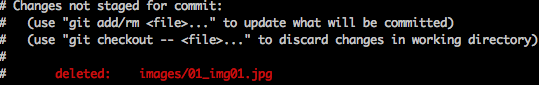
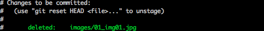

Gitリファレンス
gitの使い方まとめ
- Basic - 基本（とりあえずこれ覚えればOK）
- log - ログ
- commit - コミット
- branch - ブランチ
- merge - マージ
- tag - タグ
- remote - 共有
- submodule - サブモジュール
- git-svn
- etc - その他
- 参考
Basic - 基本（とりあえずこれ覚えればOK）
$ git init hoge # git リポジトリを作成。または...
$ git clone hoge@example.com:myrepo.git # 外部から取得
... some change
$ git add *
$ git commit -m "my commit"
$ git status # 状態を見る
$ git push origin master # remoteに送信
$ git pull # remoteの更新を取得
log - ログ
$ git log -p # diffも出力する
$ git log --stat # 変更したファイルの一覧
$ git log --pretty=oneline #１行で
$ git log --pretty=format:"%h - %an, %ar : %s" # 独自のフォーマットで
$ git log --since=2.weeks # 日付指定
$ git log -[n] # n件表示
$ git log --graph --oneline # ブランチ・マージ状態の確認
commit –amend や reset –hard HEAD^^ などで消えたコミットを確認する
$ git reflog
HEADの移り変わりを確認できる。ブランチの移動など。reset –hardした直後なら、reflogでコミットが確認できる。
この方法でも辿れなくなる場合はあるのでしょうか。
commit - コミット
この３手順でsvn commitとだいたい同じ動作になる。
$ git add hoge.txt # コミット前に `git add` でステージングが必要
$ git commit -m "message" # -m オプションは同じ
$ git push # リモートに送信する
といっても、add するのが面倒な時は -a オプションが使用できる（add済みファイルに限る）。
$ git commit -a hoge.txt
直前のコミットを書き換える。
$ git commit --amend
直前のコミットをなかった事にして一つ前のコミット状態に戻す。
$ git reset --hard HEAD^ # HEAD^で１つ前、HEAD^^で２つ前
$ git reflog # 間違えた場合は reflog で確認
ステージング
$ git add hoge.txt
$ git add -p hoge.txt # interactiveに部分的なステージングができる
ステージングの取り消し
$ git reset HEAD hoge.txt
svn revertのようなもの。ステージングしていない変更の取り消し。
$ git checkout -- hoge.txt
$ git checkout -- . # こうするとカレントディレクトリ以下の全更新が消えるよ
$ git checkout -p hoge.txt # interactiveに操作する
実際に削除したファイルを、git上でも削除としてステージングする
Changes not staged for commit の状態がdeletedなファイルを削除してしまいたい。

$ git add -u . # -u or --update
すると Changes to be committed になる

branch - ブランチ
http://progit.org/book/ja/ch3-1.html
HEADとは「あなたが作業しているローカルブランチへのポインタ」
testing ブランチを作成（切り替えはしない）
$ git branch testing
切り替える
$ git checkout testing
作成して切り替える
$ git checkout -b issue53
merge - マージ
通常のマージはFast forward ポインタを前に進めるだけ。 A Successful Git branching modelでは –no-ff オプション推奨。
$ git merge issue53
$ git merge --no-commit issue53 # "Merged branch ..." とコミットしない
$ git merge --no-squash issue53 # 変更をワーキングツリーに適用する。
# マージもコミットもしない。
# ブランチ上での履歴は失われる。
$ git merge --no-ff issue53 # Fast forwardを行わない。
マージを取り消す場合も通常のコミット同様reset --hard
$ git reset --hard HEAD
mergeは二本に分かれた枝を一本に合わせる。 rebaseは枝が一本になるように作り直す。mergeとrebaseの違い
$ git rebase master
あるコミットの変更分だけを適用する。rebaseは連続して cherry-pick しているだけのもの。
$ git cherry-pick {commit}
tag - タグ
タグの一覧
$ git tag
タグを作成
$ git tag v0.1
注釈付きタグの作成（コミットするかどうかの違いらしいが、どう使い分けるのかよくわかりません）
$ git tag -a v1.4 -m 'my version 1.4'
タグの共有 $ git push origin v1.5 $ git push origin –tags # 共有されてないもの全部 $ git push origin :missing_tag # リモートのタグを削除
remote - 共有
http://progit.org/book/ja/ch3-5.html
「こっちの serverfix で、リモートの awesomebranch を更新しろ」
$ git push origin serverfix:awesomebranch
$ git push origin master
$ git push # track していれば省略できる
リモートにデータを送信
「こっちの (何もなし) で、向こうの [remotebranch] を更新しろ」
$ git push origin :serverfix
ドッカーン。これでブランチはサーバーから消えてしまいました。
リモートのデータを取得
$ git fetch origin
fetchしたものとマージ
$ git merge origin/master
origin/serverfix が指す先から作業を開始するためのローカルブランチができあがりました。
$ git checkout -b serverfix origin/serverfix
追跡ブランチ。cloneすると自動的に追跡ブランチする。これが引数なしでgit pushやgit pullが動作する理由。
これは同じ意味。
$ git checkout --track origin/serverfix
$ git checkout -b serverfix origin/serverfix
push時にもセットできる
$ git push -u origin master
pull は fetch と merge を自動でやってくれる
$ git pull
$ git pull --rebase # mergeではなくrebaseします。
# ちょっとしたローカルの変更がある場合に
リモートブランチを削除しても、別の場所してクローンされてるとずっと残る。追加は自動だけど削除は自動でしてくれない。そういう場合に prune を使う。
# 状態を確認する
$ git remote show origin
$ git remote prune origin
リポジトリを破壊します！
$ git push --force origin master
submodule - サブモジュール
http://progit.org/book/ja/ch6-6.html
submoduleを追加する。
$ git submodule add git://github.com/chneukirchen/rack.git rack
初回のみinitを実行する。updateすると、自動的にcloneされる。
$ git submodule init
$ git submodule update
git submodule initを実行すると、.gitmodules が作られる。
サブモジュールの外部の変更を取り込むには、
- サブモジュール内でHEADを更新して、
-
上流のリポジトリでサブモジュールの変更をコミットする
$ cd rack $ git pull $ cd .. $ git add rack $ git commit -m “update submodule”
上流のリポジトリはサブモジュールのあるコミットを記録する。サブモジュールの内容が更新されたら、手動で更新を反映させなければならない。ここがsvn:externalsと異なる。
git submodule updateは上流のリポジトリが保存したポイントで、サブモジュールを再現する（チェックアウトのようなイメージ）。
問題点。特定のバージョンをポイントしている（detached head）ので、git submodule updateで手元の変更が失われやすい。
サブモジュールを削除
.git/config の該当モジュールを削除
$ git rm --cached path/to/hoge
$ git commit
git-svn
http://progit.org/book/ja/ch8-1.html http://d.hatena.ne.jp/idesaku/20090323/1237825080
svn checkoutのようなもの svnからgitリポジトリを作成。 -s(standard)オプションはsvnのtrunk/branches/tags構成をそのままインポートする
$ git svn clone file:///tmp/test-svn -s
svnのデータだけ取得
$ git svn fetch
svn upのようなもの svnのデータを取り込む
$ git svn rebase
svn commitのようなもの svnにコミット。gitのコミットIDが書き換わる！注意！ コミットできたらgit-svn-id属性が付く。
$ git svn dcommit
git-svnで削除されたリモートブランチをローカルでも削除する方法
$ git branch -r -d my-remote-branch
svnにブランチ作成
$ git svn branch new_branch_name
svnにタグ作成
$ git svn tag new_tag_name
git-svn dcommit できなかったのでコミットID見たら、違うIDになってた…。
patch を作成する
ローカルに未コミットの変更があるけどgit-svn-dcommitしたい
stashを使う
$ git stash
$ git svn dcommit
$ git stash apply
svn:externalsのようなことをしたい
git submoduleを使う。
移行スクリプト。でもうまくいかなかった…
http://github.com/garbas/garbasgit.svnexternals via http://d.hatena.ne.jp/Sixeight/20090210/1234272295
空のディレクトリはバージョン管理できない
.gitignoreとか何でもいいから空ファイルを作成すればOK。
複数のモジュールを含むSubversionリポジトリをGitへ移行する。
http://iteman.jp/blog/2009/02/subversiongit.html
部分的なチェックアウトできない
svn checkout はパスを指定すればどの階層でもワーキングコピーを作成できる。 git clone すると今までの履歴含め、全てをコピーしなければならない。 なのでプロジェクト/モジュールごとにリポジトリを作成するのがベストだろう。
そのため、ディレクトリ同士のマージができない。これはどうにもできないかも。
trunk, branches, tags
- Subversionはディレクトリ構造として表現
- Gitはbranchesとtagsが別のシステムになっている。
etc - その他
過去のバージョンを取得、表示
特定のファイルを特定のバージョンに戻す。commit_id はブランチやタグ名、コミットIDなど。
$ git checkout commit_id path/to/file
単に表示する場合はgit showで。
$ git show commit_id:path/to/file
パッチを作って適用する
http://blog.s21g.com/articles/680
直前のコミットとその前との差分でパッチを作成する
$ git format-patch -r HEAD~
パッチを適用する
$ git am 0001-hoge.patch
コンフリクト状態が残ってしまった場合
# このようなメッセージがでた場合
You have not concluded your merge (MERGE_HEAD exists).
Please, commit your changes before you can merge
$ git reset --merge
mergeを実行したらconflictが大量に出てしまったので取り消したい
$ git reset --hard ORIG_HEAD
untrackedなファイルを取り除きたい
$ git clean -f
merge と rebase の違い
masterのHEADはポイントAにあるとする
(master) ---A
Aからブランチしたworkingを作成し、Bまで進める
(master) ---A
\
(working) \----- B
そこからさらに masterでも変更し A’ まで進めたとする
(master) -- A ------------ A'
\
(working) \----- B
この状態で、
(master) git merge working した場合 A’に B がマージされて C になる。 C の HEAD^（一つ前） は A’
(master) ---A ------------ A' ---- C
\ /
(working) \-----B------------
(master) git rebase working した場合 コミットA’の存在はmasterからはなくなって、 Bからの続きとして AからA’の差分がマージされて A’’ になる A’’ の HEAD^ は B
First, rewinding head to replay your work on top of it...
Applying: commit B
(master) ---A ------ A''
\ /
(working) \-----B
mergeはブランチの履歴を残して一本にするけど、rebaseすると履歴も含めて一本に作り直す。そのためrebaseは注意が必要。
git pullでremoteを自動的に指定
#
# remoteが指定されてない(trackしてない)場合はリモート指定なしで git pull しても「わからないよ」と言われる
#
(master) $ git pull
You asked me to pull without telling me which branch you
want to merge with, and 'branch.master.merge' in
your configuration file does not tell me, either. Please
specify which branch you want to use on the command line and
try again (e.g. 'git pull <repository> <refspec>').
See git-pull(1) for details.
If you often merge with the same branch, you may want to
use something like the following in your configuration file:
[branch "master"]
remote = <nickname>
merge = <remote-ref>
[remote "<nickname>"]
url = <url>
fetch = <refspec>
See git-config(1) for details.
# 解決法１
# 手動で指定
#
(master) $ git pull origin master
# 解決法２
# configで指定
#
$ vi .git/config
[branch "master"]
remote = origin
merge = refs/heads/master
# 解決法３
# これだけでOK
$ git push -u origin master
コミットの圧縮
マージするときにひとつのコミットにまとめる。
git merge --squash something-new-feature
または git rebase -i でsquash する。（後述）
コミットを操作する
# コミット２つあったとする
git commit -am "hoge"
git commit -am "moge"
git rebase -i head^^
するとエディターが開かれる。
pick 59d6190 hoge
pick 0149644 moge
# Rebase 36fde72..0149644 onto 36fde72
# ...
この行を修正して保存することで、指示通りにrebaseが行われる。 コマンドはコメントに書かれてある。
- pick はそのままコミットを使う
- reword は保存後にrebaseが走るので、その時にコミットメッセージを変更するエディタが走る。（注：rebase -i した中でのコメントを変更するのではない。）
- edit はamendするためにストップする？よくわからん。
- squash は一つ前のコミットと結合する。コミットメッセージはrebaseで選択する。
- fixup は一つ前のコミットと結合する。コミットメッセージは前のが使われる。
- exec はshellを走らせるらしい。
で、行を消すとそのコミットが失われる。でも全部消すとrebaseは中止になる。
revert コミットを打ち消す
$ git revert commit_id
http://d.hatena.ne.jp/miau/20100709/1278699637